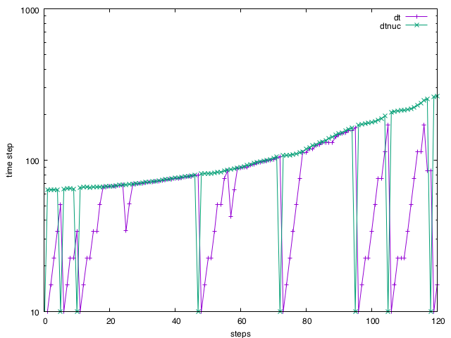

- dt_maxTime step to cut back to at the start of a nucleation event
C++ Type:Real
Unit:(no unit assumed)
Controllable:No
Description:Time step to cut back to at the start of a nucleation event
- inserterDiscreteNucleationInserter user object
C++ Type:UserObjectName
Controllable:No
Description:DiscreteNucleationInserter user object
DiscreteNucleationTimeStep
Return a time step limit for nucleation event to be used by IterationAdaptiveDT
Supply this postprocessor to an IterationAdaptiveDT via the timestep_limiting_postprocessor parameter.
The timestep limit computed by this postprocessor is computed according to two different criteria.
Time step limit at nucleus insertion
If a nucleus has just been added to the nucleus list by the DiscreteNucleationInserter the timestep limit is set to the value supplied using the dt_max parameter for one timestep. In conjunction with IterationAdaptiveDT this causes the time step to be cut to dt_max from which it will slowly have to grow back.
Nucleation rate based timestep limit
Between nucleation event onsets the timestep is limited based on the user supplied upper bound on the probability (p2nucleus) to have _more than two_ nucleation events to occur during a single timestep. This probability is calculated as
(1)
where is the total nucleation rate over the whole simulation cell that results in the probability . To obtain for a given equation Eq. (1) is numerically inverted. is then divided by the integrated nucleation rate per unit time to obtain the largest possible time step that keeps the probability for two or more nuclei to form below the user specified upper bound.

Timestep (dt) in a nucleation simulation with a DiscreteNucleationTimeStep limited time step. The green curve (dtnuc) shows the time step limit. The envelope of that curve is determined by the upper bound on the two or more nucleus probability. The sharp downward spikes are the time step cut-backs during nucleation events.
This addresses two issues with poisson statistics sampling. At every sampling point in the domain the rate is sufficiently low to stay in the rare event regime (i.e where either zero or one event are happening). At higher rates the time resolution is insufficient to capture all possible nucleation events. Controlling the probability of multiple nuclei forming also reduces the chance of overlapping nuclei to form.
The DiscreteNucleationTimeStep postprocessor is part of the Discrete Nucleation system.
Input Parameters
- p2nucleus0.01Maximum probability for more than one nucleus to appear during a time step. This will limit the time step based on the total nucleation rate for the domain to make sure the probability for two or more nuclei to appear is always below the chosen number.
Default:0.01
C++ Type:Real
Unit:(no unit assumed)
Range:p2nucleus > 0 & p2nucleus < 1
Controllable:No
Description:Maximum probability for more than one nucleus to appear during a time step. This will limit the time step based on the total nucleation rate for the domain to make sure the probability for two or more nuclei to appear is always below the chosen number.
Optional Parameters
- allow_duplicate_execution_on_initialFalseIn the case where this UserObject is depended upon by an initial condition, allow it to be executed twice during the initial setup (once before the IC and again after mesh adaptivity (if applicable).
Default:False
C++ Type:bool
Controllable:No
Description:In the case where this UserObject is depended upon by an initial condition, allow it to be executed twice during the initial setup (once before the IC and again after mesh adaptivity (if applicable).
- execute_onTIMESTEP_ENDThe list of flag(s) indicating when this object should be executed. For a description of each flag, see https://mooseframework.inl.gov/source/interfaces/SetupInterface.html.
Default:TIMESTEP_END
C++ Type:ExecFlagEnum
Controllable:No
Description:The list of flag(s) indicating when this object should be executed. For a description of each flag, see https://mooseframework.inl.gov/source/interfaces/SetupInterface.html.
- execution_order_group0Execution order groups are executed in increasing order (e.g., the lowest number is executed first). Note that negative group numbers may be used to execute groups before the default (0) group. Please refer to the user object documentation for ordering of user object execution within a group.
Default:0
C++ Type:int
Controllable:No
Description:Execution order groups are executed in increasing order (e.g., the lowest number is executed first). Note that negative group numbers may be used to execute groups before the default (0) group. Please refer to the user object documentation for ordering of user object execution within a group.
- force_postauxFalseForces the UserObject to be executed in POSTAUX
Default:False
C++ Type:bool
Controllable:No
Description:Forces the UserObject to be executed in POSTAUX
- force_preauxFalseForces the UserObject to be executed in PREAUX
Default:False
C++ Type:bool
Controllable:No
Description:Forces the UserObject to be executed in PREAUX
- force_preicFalseForces the UserObject to be executed in PREIC during initial setup
Default:False
C++ Type:bool
Controllable:No
Description:Forces the UserObject to be executed in PREIC during initial setup
Execution Scheduling Parameters
- control_tagsAdds user-defined labels for accessing object parameters via control logic.
C++ Type:std::vector<std::string>
Controllable:No
Description:Adds user-defined labels for accessing object parameters via control logic.
- enableTrueSet the enabled status of the MooseObject.
Default:True
C++ Type:bool
Controllable:Yes
Description:Set the enabled status of the MooseObject.
- outputsVector of output names where you would like to restrict the output of variables(s) associated with this object
C++ Type:std::vector<OutputName>
Controllable:No
Description:Vector of output names where you would like to restrict the output of variables(s) associated with this object
- use_displaced_meshFalseWhether or not this object should use the displaced mesh for computation. Note that in the case this is true but no displacements are provided in the Mesh block the undisplaced mesh will still be used.
Default:False
C++ Type:bool
Controllable:No
Description:Whether or not this object should use the displaced mesh for computation. Note that in the case this is true but no displacements are provided in the Mesh block the undisplaced mesh will still be used.
Advanced Parameters
- prop_getter_suffixAn optional suffix parameter that can be appended to any attempt to retrieve/get material properties. The suffix will be prepended with a '_' character.
C++ Type:MaterialPropertyName
Unit:(no unit assumed)
Controllable:No
Description:An optional suffix parameter that can be appended to any attempt to retrieve/get material properties. The suffix will be prepended with a '_' character.
- use_interpolated_stateFalseFor the old and older state use projected material properties interpolated at the quadrature points. To set up projection use the ProjectedStatefulMaterialStorageAction.
Default:False
C++ Type:bool
Controllable:No
Description:For the old and older state use projected material properties interpolated at the quadrature points. To set up projection use the ProjectedStatefulMaterialStorageAction.